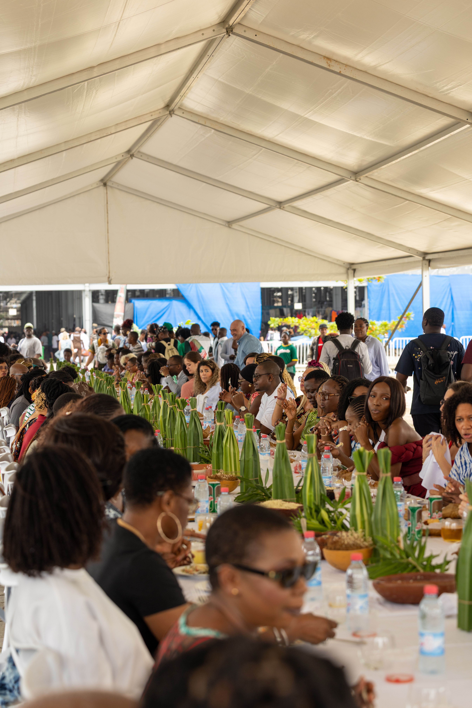

Les Patronnes · Stop 2
Marché PK3
11 juillet 2026 · CotonouUn marché en mouvement
Galerie, podium, banquet
Le marché PK3 devient une galerie à ciel ouvert, un défilé et une immense table de banquet. Cette seconde étape rend hommage aux femmes qui font du textile, du commerce et de la transmission une force quotidienne.
Exposition photographique, masterclass, prises de parole et banquet populaire composent une journée où le marché se raconte depuis celles qui le tiennent à bout de bras.
